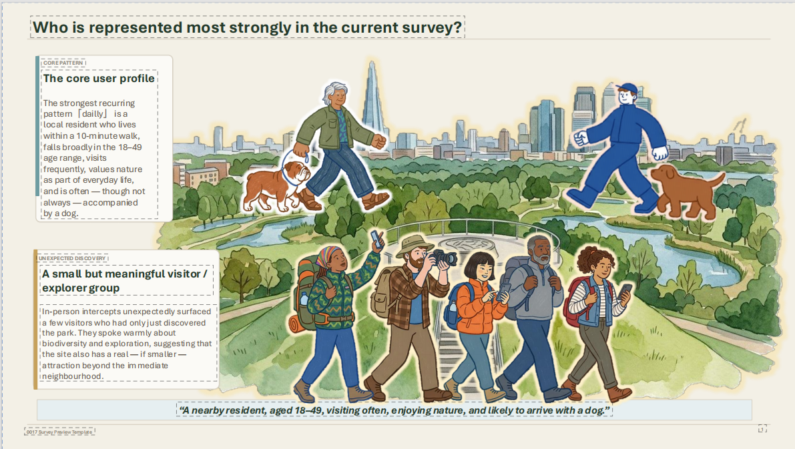
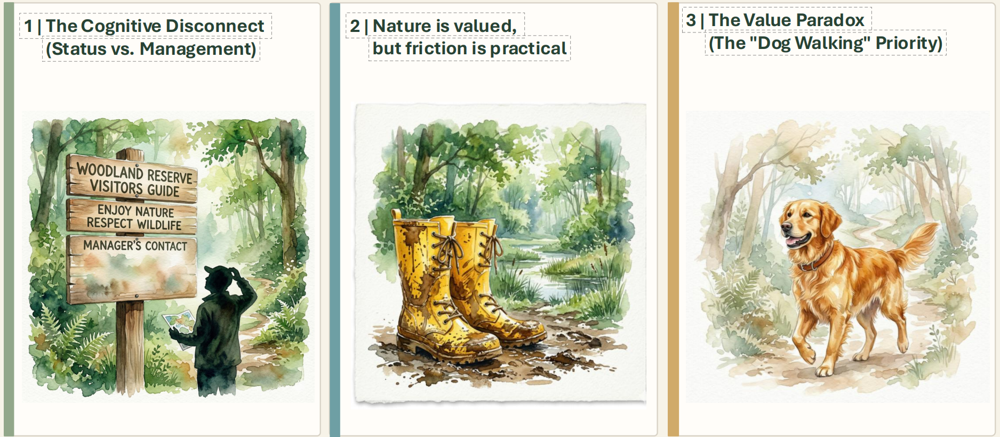
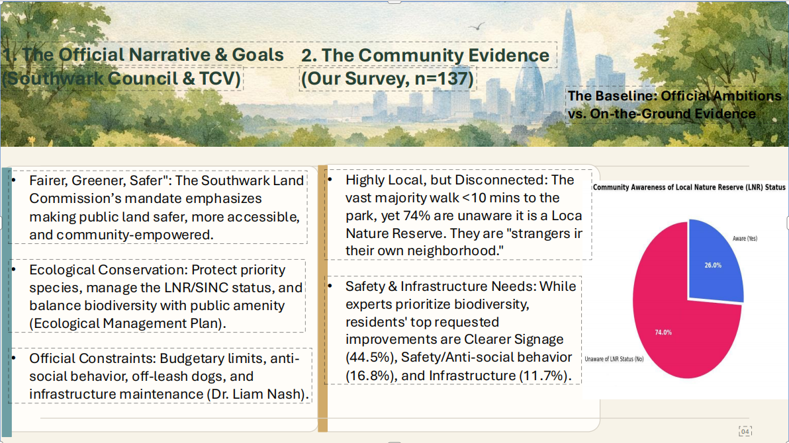

Why this survey matters
The survey was designed to bridge a gap between policy and lived experience. It asks not only whether people appreciate the park, but also who is being heard, what everyday problems matter most, and where official ecological ambitions do not fully match public experience on the ground.
The questionnaire combined online and in-person methods and focused on visitor profile, awareness, experience, improvement priorities, and views on future engagement and governance.
What the survey looked at
The survey was structured around four themes: visitor profile and usage patterns, awareness and perceived value, future expectations and improvement priorities, and willingness to support or participate in governance and stewardship.
Visitor profile
Who comes here, how often they visit, how far they travel, and what they mainly come to do.
Experience and value
How people feel about the site, how satisfied they are, and what they think makes it important.
Priorities and governance
What people most want improved, and how they think community voice should relate to expert management.

Where responses were collected
In-person questionnaires were collected at entrances, paths, lawns, and the Stave Hill viewpoint. Field notes also observed that even people living within a short walk of the site often had little knowledge of it.
Who is most strongly represented
The strongest recurring survey pattern is a nearby resident, often living within a 10-minute walk, visiting frequently, valuing nature as part of everyday life, and often — though not always — arriving with a dog. The survey also identified a smaller visitor or explorer group who had only recently discovered the park.
Core user profile
- Nearby resident
- Usually within a short walking distance
- Frequent visitor
- Strong everyday use of the landscape
- Often connected with dog walking
Smaller explorer group
- Newer or less routine visitors
- Interested in biodiversity and exploration
- Suggest the park has meaning beyond the immediate neighbourhood
- Important for understanding future reach and inclusion

Who the current evidence represents most strongly
The data is especially strong for everyday local users, but weaker for faster-moving, less engaged, or purely pass-through users.
Three main interpretation threads
Rather than only reporting more numbers, the survey presentation identifies three broader interpretive patterns that help explain what the results mean in practice.
Cognitive disconnect
People may recognise the place as valuable, but often do not understand its formal status, management structure, or how to report issues.
Nature is valued, but friction is practical
People appreciate nature strongly, but the most immediate frustrations are about safety, paths, lighting, cleanliness, maintenance, and day-to-day usability.
The value paradox
Broadly shared values include nature, health, and exercise, but first-choice priorities reveal that dog walking is especially central for a substantial group of users.

From results to interpretation
The presentation moves from simple data reporting to explaining how use, attachment, and friction points shape real community experience.
What people value — and what gets in the way
Overall satisfaction is relatively high, and many respondents gave positive evaluations of the park’s management, visitor experience, and wider importance. Many also expressed emotional attachment and a sense of belonging. At the same time, open comments and ranked priorities show that practical concerns remain highly significant.
What people value
- Enjoying nature and wildlife
- Physical and mental health benefits
- Exercise and everyday outdoor use
- Supporting wildlife and habitats
- Landscape quality and local identity
What people want improved
- Clearer signage and information
- Safety and anti-social behaviour management
- Lighting, visibility, and seating
- Paths, accessibility, and maintenance
- More understandable links between nature and management
Key insight: people strongly value the natural qualities of the site, but many of the barriers to deeper engagement are ordinary and practical rather than ecological in the abstract.
Official goals vs. lived experience
One of the clearest arguments in the presentation is that there is a gap between official ambitions and community evidence. Official narratives emphasise ecology, accessibility, safety, and fairer public land use. Community responses support these goals, but also show that many nearby residents still feel disconnected from the site’s identity and day-to-day management.
Official ambitions
- Fairer, greener, safer public land
- Ecological conservation and habitat protection
- Accessibility and public amenity
- Managing budget, anti-social behaviour, and maintenance limits
Community evidence
- Many users are highly local, but not fully informed
- A large share do not know the site’s Local Nature Reserve status
- Safety, signage, and infrastructure are repeatedly raised
- Nearby users may still feel like “strangers” to the park’s identity

The gap the survey highlights
The issue is not that official aims are wrong, but that lived experience shows where those aims are not yet fully realised on the ground.
What this suggests for the future
The survey does not end with raw data. It points toward several practical directions: broadening reach, deepening inclusion, and using user feedback more directly to support infrastructure repair, communication, and longer-term shared stewardship.
Broaden reach
Reach nearby residents who are physically close to the site but still not strongly connected to it.
Deepen inclusion
Strengthen participation among groups who are harder to capture in the current evidence, including fast-moving or less engaged users.
Improve practical conditions
Focus on signage, lighting, access, seating, and maintenance so that ecological value is matched by a more welcoming public experience.
Central message: the park is valued, but stronger belonging will depend on clearer identity, safer and more legible spaces, and better ways of turning local experience into practical action.